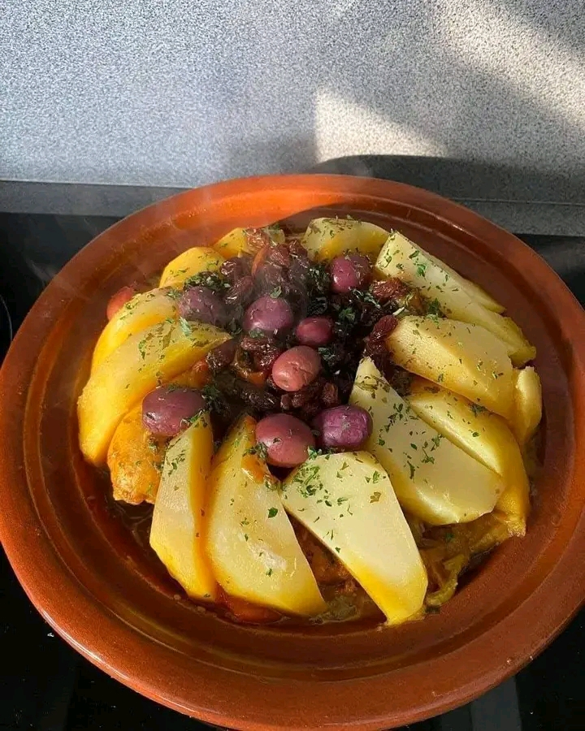

🔥 وصفات مختارة | Featured Recipes

🍕 بيتزا إيطالية | Italian Pizza
طريقة تحضير بيتزا منزلية لذيذة بسهولة! | Learn how to make homemade delicious pizza!
📖 شاهد الوصفة | View Recipe🎂 كيكة الشوكولاتة | Chocolate Cake
وصفة سهلة لعمل كيكة شوكولاتة لذيذة. | Easy chocolate cake recipe.
📖 شاهد الوصفة | View Recipe
🥣 الحريرة المغربية | Moroccan Harira
وصفة الحريرة المغربية الشهيرة لشهر رمضان المبارك! | Traditional Moroccan Harira for Ramadan!
📖 شاهد الوصفة | View Recipe

🍲 طاجين مغربي | Moroccan Tajine
اكتشف وصفة الطاجين المغربي الشهي بمكوناته الفريدة وطريقته الخاصة. | Discover the delicious Moroccan Tajine recipe with its unique ingredients and special preparation method.
📖 شاهد الوصفة | View Recipe